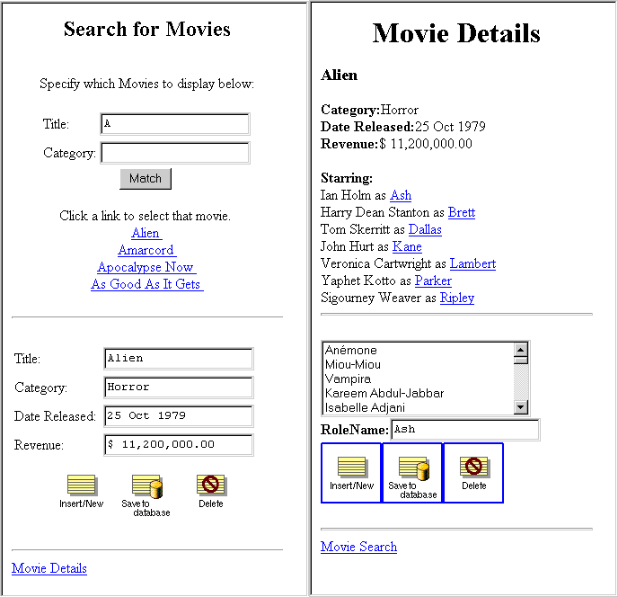
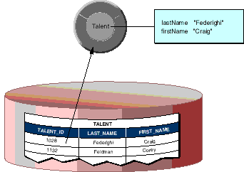
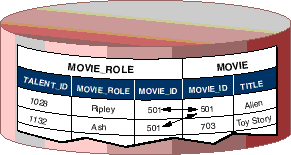
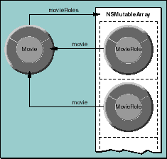

Creating a WebObjects Database Application
PATH
WebObjects 4.0 Documentation >
Getting Started With WebObjects
 Table of Contents
Table of Contents  Previous Section
Previous Section
The Movies Application
The Movies application has two pages, each of which allows you to access information from the database in different ways:

Enterprise Objects and the Movies Database
Enterprise Objects Framework manages the interaction between the database and objects in the Movies application. Its primary responsibility is to fetch data from relational databases into enterprise objects. An enterprise object, like any other object, couples data with methods for operating on that data. In addition, an enterprise object has properties that map to stored data. Enterprise object classes typically correspond to database tables. An enterprise object instance corresponds to a single row or record in a database table.
The Movies application centers around three kinds of enterprise objects: Movies, MovieRoles, and Talents. A movie has many roles, and talents (or actors) play those roles.
The Movie, MovieRole, and Talent enterprise objects in the Movies application correspond to tables in a relational database. For example, the Talent enterprise object corresponds to the TALENT table in the database, which has LAST_NAME and FIRST_NAME columns. The Talent enterprise object class in turn has lastName and firstName instance variables. In an application, Talent objects are instantiated using the data from a corresponding database row, as shown in the following figure:

Enterprise Objects and Relationships
Relational databases model not just individual entities, but entities' relationships to one another. For example, a movie has zero, one, or more roles. This is modeled in the database by both the MOVIE table and MOVIE_ROLE table having a MOVIE_ID column. In the MOVIE table, MOVIE_ID is a primary key, while in MOVIE_ROLE it's a foreign key.
A primary key is a column or combination of columns whose values are guaranteed to uniquely identify each row in that table. For example, each row in the MOVIE table has a different value in the MOVIE_ID column, which uniquely identifies that row. Two movies could have the same name but still be distinguished from each other by their MOVIE_IDs.
A foreign key matches the value of a primary key in another table. The purpose of a foreign key is to identify a relationship from a source table to a destination table. In the following diagram, notice that the value in the MOVIE_ID column for both MOVIE_ROLE rows is 501. This matches the value in the MOVIE_ID column of the "Alien" MOVIE row. In other words, "Ripley" and "Ash" are both roles in the movie "Alien."

Suppose you fetch a Movie object. Enterprise Objects Framework takes the value for the movie's MOVIE_ID attribute and looks up movie roles with the corresponding MOVIE_ID foreign key. The framework then assembles a network of enterprise objects that connects a Movie object with its MovieRole objects. As shown below, a Movie object has an array of its MovieRoles, and the MovieRoles each have a Movie.

Table of Contents  Next Section
Next Section